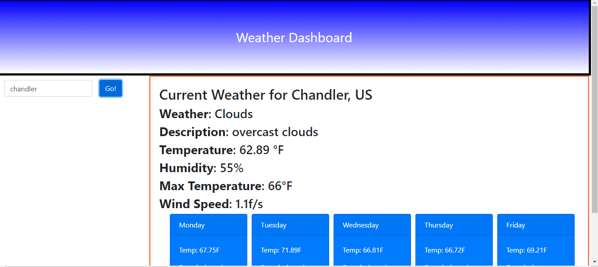

Portfolio


- Find Tune
- The Find Tune Project is a Music suggestion website that at the input of an artist generates top ten songs, and a related GIF using Deezer API, and GIPHY API

- Weather Dashboard
- The Weather Dashboard uses 3 sperate open weather APIs to get current weather in searched city, the five day forcast, and the UV index.
- Password Generator
- The password generator generates a password after the user answers a couple of questions about the contents and length of the designated password

- Workday scheduler
- Using Moment Js and local storage the workday scheduler has 9 text boxes that each hold the value of the hour and the user can save what they plan to do for the day by hour in the text areas